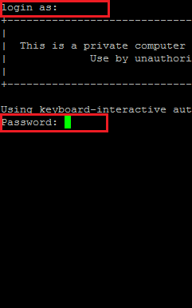
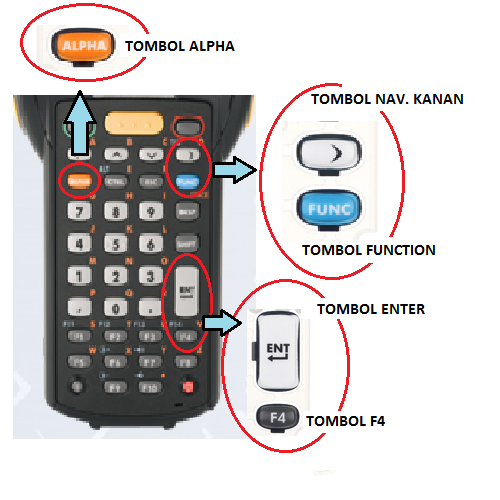
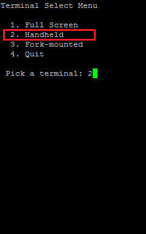
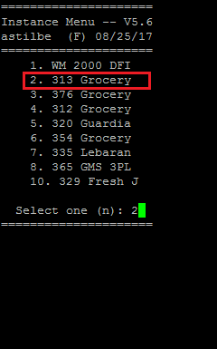
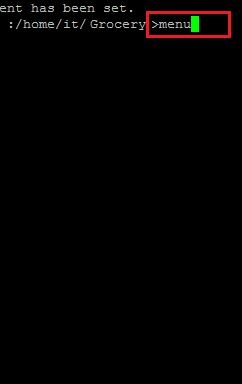
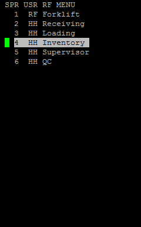
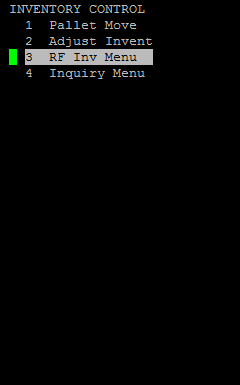
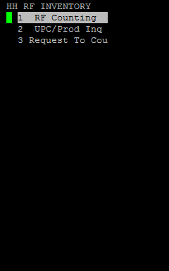
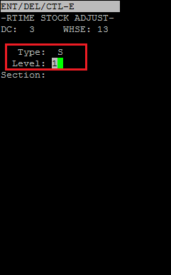
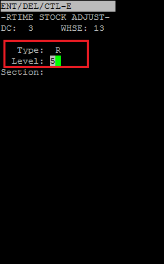

LOGIN SCANNER RF
(STEP NO.1)
Masukan nama user pada login as, kemudian tekan Enter
Masukan password user pada Password, kemudian tekan Enter

Catatan : Tekan tombol ALPHA untuk merubah karakter menjadi huruf/angka di Scanner RF

(STEP NO.2)
Ketik angka yang menunjukkan menu Handheld, kemudian tekan Enter

(STEP NO.3)
Ketik angka yang menunjukkan menu 313 Grocery, kemudian tekan Enter

(STEP NO.4)
ketik menu pada sesi ini, kemudian tekan Enter

(STEP NO.5)
Pilih HH Inventory, kemudian tekan Enter

(STEP NO.6)
Pilih RF Inv Menu, kemudian tekan Enter

(STEP NO.7)
Pilih RF Counting, kemudian tekan Enter

(STEP NO.8)
Untuk lokasi Pick Slot :
- Pada opsi Type : , ketik S untuk melakukan scan pada lokasi PICK SLOT
- Pada opsi Level : , masukan level Pick Slotnya

- Catatan : Jumlah Range level Pick Slot pada setiap jalur (aisle) akan berbeda-beda, periksalah dengan benar dan sesuai
Untuk lokasi Reserve :
- Pada opsi Type : , ketik huruf R untuk melakukan scan pada lokasi RESERVE
- Pada opsi Level : , masukan level Reservenya

- Catatan : Jumlah Range level Reserve pada setiap jalur (aisle) akan berbeda-beda, periksalah dengan benar dan sesuai